Introduction to Justifying Alpha Levels
Daniel Lakens & Aaron R. Caldwell
2021-12-13
Source:vignettes/compromise_power.Rmd
compromise_power.RmdIntroduction
We have recently, August 2020, added 5 new functions to Superpower to expand the package’s capabilities. In this vignette, we will introduce these new functions and how they can help with study planning.
These new functions include: power.ftest, optimal_alpha, ANOVA_compromise, alpha_standardized, and p_standardized
The overall goal is to provide ways for researchers to justify their alpha level when designing studies, and provide greater flexibility.
How are error rates minimized?
Within the new optimal_alpha function, there are two options within the error argument: minimal or balanced.
First, we have an equation for how a weighted combined error rate is calculated when error = minimal. (costT1T2 * x + priorH1H0 * y)/(priorH1H0 + costT1T2)
\(WCER = \frac{\frac{cost_\alpha}{cost_\beta} \cdot \alpha + \frac{Pr(H_1)}{Pr(H_0)}\cdot\beta}{\frac{Pr(H_1)}{Pr(H_0)}+\frac{cost_\alpha}{cost_\beta}}\)
Second, we have an equation for how a weighted combined error rate is calculated when error = balanced. max((costT1T2 * x - priorH1H0 * y)/(priorH1H0 + costT1T2), (priorH1H0 * y - costT1T2 * x)/(priorH1H0 + costT1T2))
\(WCER = max(\frac{\frac{cost_\alpha}{cost_\beta} \cdot \alpha - \frac{Pr(H_1)}{Pr(H_0)}\cdot\beta}{\frac{Pr(H_1)}{Pr(H_0)}+\frac{cost_\alpha}{cost_\beta}} | \frac{ \frac{Pr(H_1)}{Pr(H_0)}\cdot\beta - \frac{cost_\alpha}{cost_\beta} \cdot \alpha }{\frac{Pr(H_1)}{Pr(H_0)}+\frac{cost_\alpha}{cost_\beta}})\)
Minimizing Error Rates
Assume we plan to perform an independent samples t-test, where our smallest effect size of interest is d = 0.5, and we are planning to collect 64 participants in each condition. We would normally calculate power as follows:
power.t.test(delta = .5, sd = 1, n = 64, sig.level = 0.05, type = 'two.sample', alternative = 'two.sided')$power
This analysis tells us that we have 80% power with a 5% alpha level for our smallest effect size of interest, d = 0.5, when we collect 64 participants in each condition.
If we design 2000 studies like this, the number of Type 1 and Type 2 errors we make depend on how often the null hypothesis is true, and how often the alternative hypothesis is true. Let’s assume both are equally likely for now. This means that in 1000 studies the null hypothesis is true, and we will make 50 Type 1 errors. In 1000 studies the alternative hypothesis is true, and we will make 100-80 = 20% Type 2 errors, so in 200 studies we will not observe a significant result even if there is a true effect. Combining Type 1 and Type 2 errors, in the long run, we should expect 250 of our 2000 studies to yield an error.
The goal in Neyman-Pearson hypothesis testing is to control the number of errors we make, as we perform hypothesis tests. Researchers often rely on convention when setting error rates, and there is no special reason to set the Type 1 error rate at 5% and the Type 2 error rate at 20%, and there might be better choices when designing studies. For example, when collecting 64 participants per condition, it is also not optimally efficient to use these norms.
res <- optimal_alpha(power_function = "power.t.test(delta = .5, sd = 1, n=64,
sig.level = x, type='two.sample',
alternative='two.sided')$power")
print(res)##
## Optimal Alpha
## Alpha Beta Weighted.Combined.Error.Rate
## 1 0.09967232 0.1216627 0.1106675
##
## From power function:
## [1] "power.t.test(delta = .5, sd = 1, n=64, \n sig.level = x, type='two.sample', \n alternative='two.sided')$power"If a researcher is interested in effects of d = 0.5, and plans to collect 64 participants in each condition, setting the Type 1 error rate to 10% will increase the power to 88%. If we would perform 2000 studies designed with these error rates, we would observe 100 Type 1 errors and 120 Type 2 errors. The combined error rate across 2000 studies is 220 instead of 250. In other words, by choosing a more optimal alpha level, we can design lines of research more efficiently, because we are less likely to make errors in our statistical inferences.
Balancing Error Rates
You can choose to minimize the combined error rates, but you can also decide that it makes most sense to balance the error rates. For example, you might think a Type 1 error is just as problematic as a Type 2 error, and therefore, you want to design a study that has balanced error rates for a smallest effect size of interest (e.g., a 5% Type 1 error rate and a 95% Type 2 error rate). The optimal_alpha function can either minimize errors, or balance them, by specifying an additional argument in the function. The default is to minimize error rates, but by adding error = "balance" an alpha level is calculated so that the Type 1 error rate equals the Type 2 error rate.
res2 <- optimal_alpha(power_function = "power.t.test(delta = .5, sd = 1, n=64,
sig.level = x, type='two.sample',
alternative='two.sided')$power", error = "balance")
print(res2)##
## Optimal Alpha
## Alpha Beta Weighted.Combined.Error.Rate
## 1 0.1110855 0.111082 1.763508e-06
##
## From power function:
## [1] "power.t.test(delta = .5, sd = 1, n=64, \n sig.level = x, type='two.sample', \n alternative='two.sided')$power"Repeating our earlier example, the alpha level is 11%, and the power is 89% (or the Type 2 error rate is 11%). Choosing to balance error rates is only slightly less efficient (22.22%) compared to minimizing error rates (22.13%). Power analysis is always a messy business due to the uncertainty in the true effect size, and I would not worry about the rather trivial difference between minimal error rates and balanced error rates, and the latter seems slightly more intuitive to explain, which might give this approach some practical benefits when we try to teach or explain the idea to others.
Relative costs and prior probabilities
So far we have assumed a Type 1 error and Type 2 error are equally problematic. But you might believe Cohen (1988) was right, and Type 1 errors are exactly 4 times as bad as Type 2 errors. Or you might think they are twice as problematic, or 10 times as problematic. However you weigh them, as explained by Mudge et al., 2012, and Ulrich & Miller, 2019, you should incorporate those weights into your decisions.
The function has another optional argument, costT1T2, that allows you to specify the relative cost of Type1:Type2 errors. By default this is set to 1, but you can set it to 4 (or any other value) such that Type 1 errors are 4 times as costly as Type 2 errors. This will change the weight of Type 1 errors compared to Type 2 errors, and thus also the choice of the best alpha level.
res3 <- optimal_alpha(power_function = "power.t.test(delta = .5, sd = 1, n=100,
sig.level = x, type='two.sample',
alternative='two.sided')$power",
error = "minimal", costT1T2 = 4)
print(res3)##
## Optimal Alpha
## Alpha Beta Weighted.Combined.Error.Rate
## 1 0.01918734 0.1211773 0.03958533
##
## From power function:
## [1] "power.t.test(delta = .5, sd = 1, n=100, \n sig.level = x, type='two.sample', \n alternative='two.sided')$power"Now, the alpha level that minimized the weighted Type 1 and Type 2 error rates is 2%.
Similarly, you can take into account prior probabilities that either the null is true (and you will observe a Type 1 error), or that the alternative hypothesis is true (and you will observe a Type 2 error). By incorporating these expectations, you can minimize or balance error rates in the long run (assuming your priors are correct). Priors can be specified using the priorH1H0 argument, which by default is 1 (H1 and H0 are equally likely). Setting it to 4 means you think the alternative hypothesis (and hence, Type 2 errors) are 4 times more likely than that the null hypothesis is true (and hence, Type 1 errors).
res4 <- optimal_alpha(power_function = "power.t.test(delta = .5, sd = 1, n=100,
sig.level = x, type='two.sample',
alternative='two.sided')$power",
error = "minimal", priorH1H0 = 2)
print(res4)##
## Optimal Alpha
## Alpha Beta Weighted.Combined.Error.Rate
## 1 0.07901659 0.03875692 0.05217681
##
## From power function:
## [1] "power.t.test(delta = .5, sd = 1, n=100, \n sig.level = x, type='two.sample', \n alternative='two.sided')$power"If you think H1 is four times more likely to be true than H0, you need to worry less about Type 1 errors, and now the alpha that minimizes the weighted error rates is 8%. It is always difficult to decide upon priors (unless you are Omniscient Jones) but even if you ignore them, you are making the decision that H1 and H0 are equally plausible.
Extending to the Analysis of Variance
Now that the basics of finding an optimal alpha are out of the way we can move on to how these methods can be used for an ANOVA, and F-tests in general.
This is accomplished by the replacing the power.t.test function with the power.ftest function. As you can see below it operates very similar to the power.t.test; the main differences are that power.ftest requires arguments for the degrees of freedom rather than sample size. Further, rather than allow for input of the power as an argument, power_ftest allows the user to input the beta_level.
power.ftest(
num_df = NULL,
den_df = NULL,
cohen_f = NULL,
alpha_level = Superpower_options("alpha_level"),
beta_level = NULL,
liberal_lambda = Superpower_options("liberal_lambda")
)The use of the function on its own is simple, but not very intuitive for power analysis on its own.
For example, let us suppose we have known degrees of freedom of 1 and 128 respectively, and an effect size of interest of cohen_f = .22. Now we simple want to find what the power would be given an alpha_level of .07.
power.ftest(
num_df = 1,
den_df = 128,
cohen_f = .22,
alpha_level = .045,
beta_level = NULL,
liberal_lambda = FALSE
)##
## Power Calculation for F-test
##
## num_df = 1
## den_df = 128
## cohen_f = 0.22
## alpha_level = 0.045
## beta_level = 0.3210373
## power = 67.89627The process is simple for using power.ftest; now we can see where it is actually useful.
An Example with ANOVA_exact2
Let us use an example from another vignette. Imagine you plan to perform a study in which participants interact with an artificial voice assistant that sounds either like a human or like a robot, and who sounds either cheerful or sad. In the example below, we can setup a 2*2 mixed design in ANOVA_design (first factor, voice, is manipulated between participants, the second factor, emotion, is manipulated within participants). The sample size is fixed at 40 (meaning the researchers are unable to collect more than this amount) in each between subject condition (so 80 participants in total), the assumed population standard deviation is 1.03, the correlation for the within factors is 0.8, and the means are 1.03, 1.21, 0.98, 1.01. We will start by using the default alpha_level. The outcome of interest in this case is the interaction effect; this means we want this particular ANOVA-level effect to be detected if it were to exist (more so than other possible outcomes).
design_result <- ANOVA_design(design = "2b*2w",
n = 40,
mu = c(1.03, 1.41, 0.98, 1.01),
sd = 1.03,
r = 0.8,
labelnames = c("voice", "human", "robot",
"emotion", "cheerful", "sad"),
plot = TRUE)We can then pass this design onto to the ANOVA_exact2 function to estimate the effect sizes for the this particular design.
exact2_res = ANOVA_exact2(design_result, verbose = FALSE)
knitr::kable(exact2_res$main_results)| power | partial_eta_squared | cohen_f | non_centrality | |
|---|---|---|---|---|
| voice | 17.31203 | 0.0132867 | 0.1160416 | 1.050321 |
| emotion | 79.00679 | 0.0914075 | 0.3171804 | 7.847066 |
| voice:emotion | 65.61040 | 0.0683053 | 0.2707638 | 5.718415 |
As we can see here we can tell that we are tad under-powered to detect the effect of interest. Now, let us use power.ftest to find the alpha that will get us our desired beta (in this case let us assume .2).
power.ftest(num_df = exact2_res$anova_table$num_df[3],
den_df = exact2_res$anova_table$den_df[3],
cohen_f = exact2_res$main_results$cohen_f[3],
alpha_level = NULL,
beta_level = .2)##
## Power Calculation for F-test
##
## num_df = 1
## den_df = 78
## cohen_f = 0.2707638
## alpha_level = 0.125566
## beta_level = 0.2
## power = 80So, we can see that the required alpha in this case is approximately .12. However, what would be the optimal alpha?
Now, let us use this same approach in the optimal_alpha function.
res5 = optimal_alpha("power.ftest(num_df = exact2_res$anova_table$num_df[3],
den_df = exact2_res$anova_table$den_df[3],
cohen_f = exact2_res$main_results$cohen_f[3],
alpha_level = x)$power/100",
error = "minimal")
print(res5)##
## Optimal Alpha
## Alpha Beta Weighted.Combined.Error.Rate
## 1 0.1417106 0.1826088 0.1621597
##
## From power function:
## [1] "power.ftest(num_df = exact2_res$anova_table$num_df[3],\n den_df = exact2_res$anova_table$den_df[3],\n cohen_f = exact2_res$main_results$cohen_f[3],\n alpha_level = x)$power/100"Interestingly the values for alpha and beta are fairly close to the calculations we made with power.ftest alone.
ANOVA_compromise
Finally, we can extend everything we’ve done to a convenience function ANOVA_compromise. This way we can simply pass on the design from ANOVA_design and the optimal alpha can be determined for every comparison we select in a study.
comp_res = ANOVA_compromise(design_result,
emm = TRUE)You’ll notice it takes a lot longer to run ANOVA_compromise than ANOVA_exact or ANOVA_exact2, but overall the options (such as emm = TRUE) are the same. Now, we can go through the results one-by-one.
#ANOVA results
knitr::kable(comp_res$aov_comp)| effect | cohen_f | num_df | den_df | alpha | beta | objective |
|---|---|---|---|---|---|---|
| voice | 0.1160416 | 1 | 78 | 0.2793550 | 0.5064869 | 0.3929210 |
| emotion | 0.3171804 | 1 | 78 | 0.1035704 | 0.1251595 | 0.1143650 |
| voice:emotion | 0.2707638 | 1 | 78 | 0.1417106 | 0.1826088 | 0.1621597 |
#MANOVA results
knitr::kable(comp_res$manova_comp)| effect | cohen_f | num_df | den_df | alpha | beta | objective |
|---|---|---|---|---|---|---|
| (Intercept) | 1.1423652 | 1 | 78 | 0.0000060 | 0.0000005 | 0.0000033 |
| voice | 0.1160416 | 1 | 78 | 0.2793550 | 0.5064869 | 0.3929210 |
| emotion | 0.3171804 | 1 | 78 | 0.1035704 | 0.1251595 | 0.1143650 |
| voice:emotion | 0.2707638 | 1 | 78 | 0.1417106 | 0.1826088 | 0.1621597 |
#emmeans results
knitr::kable(comp_res$emmeans_comp)| effect | cohen_f | num_df | den_df | alpha | beta | objective |
|---|---|---|---|---|---|---|
| voice_human emotion_cheerful - voice_robot emotion_cheerful | 0.0244637 | 1 | 78 | 0.3185352 | 0.6703282 | 0.4944317 |
| voice_human emotion_cheerful - voice_human emotion_sad | 0.4157393 | 1 | 78 | 0.0464936 | 0.0511495 | 0.0488216 |
| voice_human emotion_cheerful - voice_robot emotion_sad | 0.0097855 | 1 | 78 | 0.3201049 | 0.6781016 | 0.4991032 |
| voice_robot emotion_cheerful - voice_human emotion_sad | 0.2103880 | 1 | 78 | 0.1983048 | 0.2862636 | 0.2422842 |
| voice_robot emotion_cheerful - voice_robot emotion_sad | 0.0328215 | 1 | 78 | 0.3170422 | 0.6630352 | 0.4900387 |
| voice_human emotion_sad - voice_robot emotion_sad | 0.1957098 | 1 | 78 | 0.2123057 | 0.3167599 | 0.2645328 |
In addition, we can extract the optimal alpha plots for any of the comparisons outlined above. These can be found in aov_plotlist, manova_plotlist, and emmeans_plotlist.
comp_res$aov_plotlist## $voice
##
## $emotion##
## $`voice:emotion`